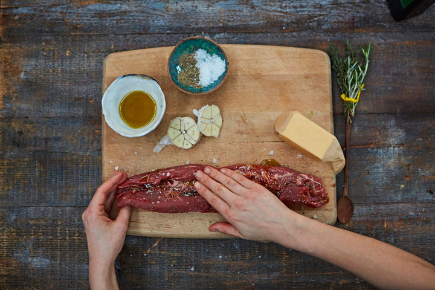
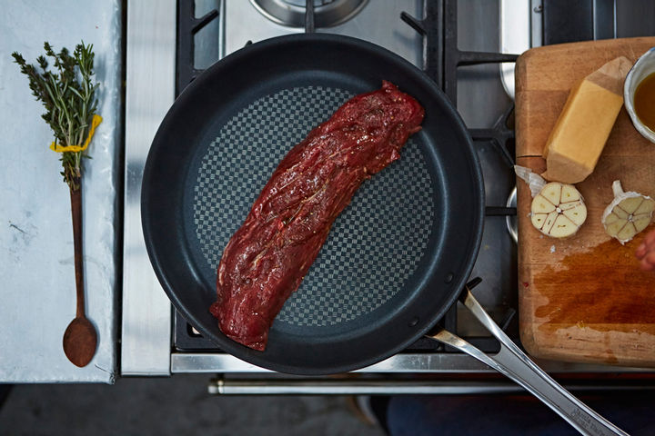
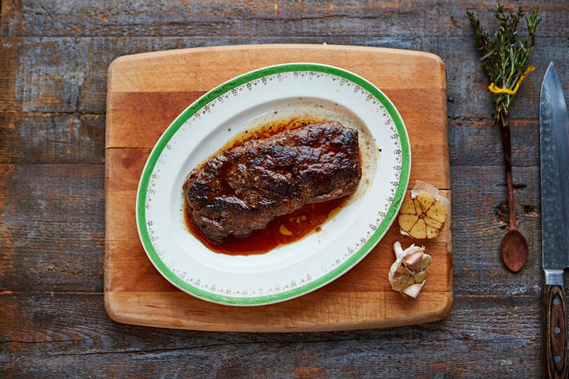

Enne alustamist võtke liha külmkapist välja ja laske sellel umbes tund aega enne küpsetamist toatemperatuurini soojeneda – külmalt praadimine takistab kuumuse keskele tungimist sama tõhusalt. Samuti peate enne alustamist veenduma, et teie pann on ülikuum – see aitab liha karamelliseerida, mis on maitsva kooriku jaoks hädavajalik.
Hõõru liha tervenisti üle oliiviõliga ning lisa ohtralt soola ja musta pipart.
Pane liha kuumale pannile ning prae 6 minutit kokku, pöörates iga minuti tagant.
Lisa pannile küüslauk, või ning tüümian (rosmariin). Praadimise vältel, kasutades lusikat, pintselda liha üle pannile tekkinud mahladega.
Kui liha on ära praadinud, tõsta see taldrikule ning lase sellel jahtudada 2 minutit. Peale seda naudi!
